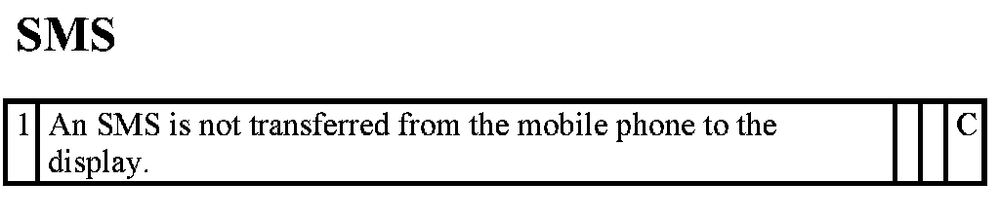

TCU I-Bus Fault Profiles For SMS (TCU 1.5 Telematics Control Unit 1.5)
TCU I-bus fault profiles for SMS
The following table lists the fault profiles covered in this test module.
The last three columns contain the information on which telephone systems each fault profile applies to:
A: telephone systems with cordless handset (e.g. optional extra 638 before 03/2005)
B: telephone systems with hard-wired mobile phone (e.g. optional extra 639 before 03/2005 and retrofit)
C: telephone systems with mobile phone connected via Bluetooth (e.g. optional extra 639 between 09/2004 and 03/2005 - Business or Professional, optional extra 639 as of 03/2005, optional extra 633)
